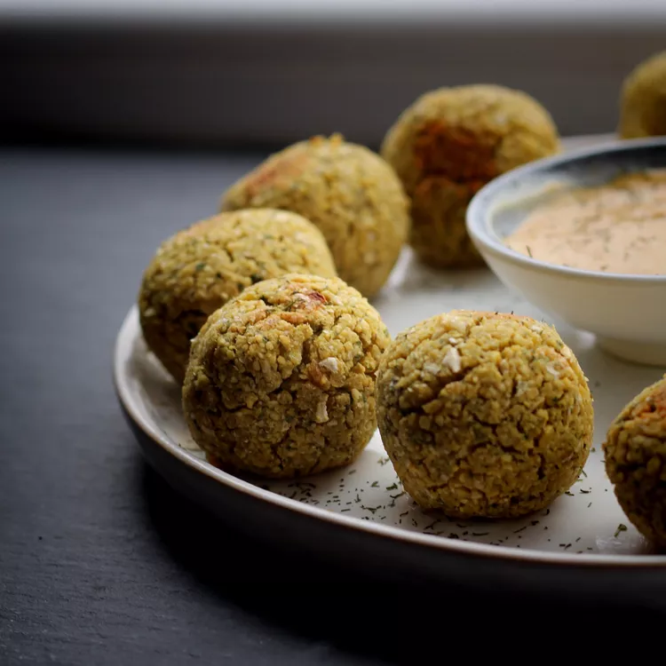

Air Fried Falafel

Description
Falafel is a popular Middle Eastern dish made from ground chickpeas or fava beans, blended with herbs, spices, and often onions and garlic. These ingredients are formed into small balls or patties and deep-fried until golden brown, resulting in a crispy exterior with a tender, flavorful interior.
Falafel is commonly served in pita bread pockets or on a plate with various accompaniments such as tahini sauce, hummus, salads, pickles, and vegetables. It's renowned for its savory taste, satisfying texture, and versatility, making it a beloved street food and vegetarian option enjoyed worldwide.
Ingredients
- 1 (15.5 ounce) can chickpeas, rinsed and drained
- 1 small yellow onion, quartered
- 3 cloves garlic, minced
- ⅓ cup roughly chopped parsley
- ⅓ cup chopped scallions
- ⅓ cup roughly chopped cilantro
- 1 teaspoon ground cumin
- ½ teaspoon kosher salt
- ⅛ teaspoon crushed red pepper flakes
- 4 tablespoons all-purpose flour
- 1 teaspoon baking powder
- olive oil cooking spray
Steps
-
Dry chickpeas on paper towels. Place onions and garlic in the bowl of a food processor fitted with a steel blade. Add parsley, scallions, cilantro, cumin, salt, and red pepper flakes. Process until blended, 30 to 60 seconds, then add the chickpeas and pulse 2 to 3 times until just blended, but not pureed. Sprinkle in flour and baking powder, scrape the sides of the bowl down with a spatula, and pulse 2 to 3 times.
-
Transfer to a bowl and refrigerate, covered, 2 to 3 hours.
-
Form the falafel mixture into 12 balls; if mixture is too sticky add some flour to your hands and your work surface.
-
Preheat an air fryer to 350 degrees F (175 degrees C) according to manufacturer's instructions. Spray falafel with cooking spray.
-
Cook in the preheated air fryer until golden brown, about 14 minutes, turning halfway through.